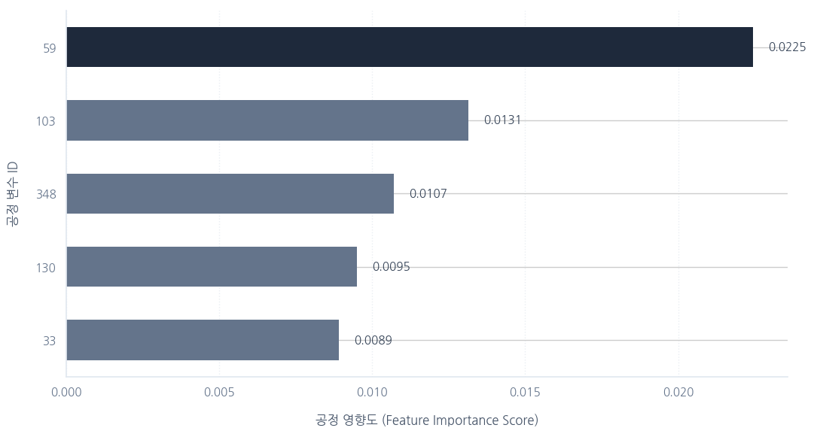

← 프로젝트 목록으로
Data Analysis
반도체 Process 데이터 분석을 통한 수율 개선 프로젝트 (SECOM)
Kaggle의 실제 반도체 제조 Process(SECOM) 데이터에서 발생하는 수율 저하의 근본 원인을 찾기 위해 진행한 데이터 분석 프로젝트로, 특정 Sensor 변수가 수율 저하와 가장 높은 상관관계를 보인다는 것을 확인해 관리 한계선(Control Limit) 강화 방안을 제안했습니다.
1,500+분석한 Process 변수
Top 5도출한 핵심 불량 변수
GitHub코드·방법론 공개
개요
반도체 기업에서 수율 엔지니어에게는 데이터 분석 역량이 필수적이라고 생각했습니다. Pandas와 머신러닝을 학습하는 데 그치지 않고, 실제 반도체 제조 Process 데이터를 활용해 수율 저하의 원인을 분석하는 프로젝트를 진행했습니다.
문제 정의: Kaggle의 실제 반도체 제조 Process(SECOM) 데이터에서 발생하는
수율 저하의 근본 원인을 찾고자 했습니다.
문제 정의
- 1,500개 이상의 Process 변수 중 수율(Pass/Fail)에 실질적인 영향을 주는 변수를 특정해야 했음
- 변수 다수에 결측치가 포함되어 있어 그대로 분석에 사용할 수 없었음
- 단순 상관관계만으로는 다변량 Process 데이터에서 핵심 원인을 짚어내기 어려웠음
접근 방법
전처리
- Pandas를 활용해 1,500개 이상의 변수 중 결측치가 다수 포함된 변수를 선별적으로 제거
- 남은 변수의 결측치는 평균값으로 대체하는 등 데이터 정제 수행
분석
- 정상/불량(Pass/Fail) 그룹 간 데이터 분포 비교
- Random Forest 모델을 활용해 수율에 가장 큰 영향을 미치는 핵심 변수(Feature Importance) Top 5 도출

Random Forest 기반 Process 변수 Feature Importance Top 5 (변수 ID: 59, 103, 348, 130, 33)
결과 및 기여
분석 결과, 특정 'Sensor' 값이 수율 저하와 가장 높은 상관관계를 보임을 확인했습니다. 이를 바탕으로 해당 Process 변수의 관리 한계선(Control Limit)을 강화하는 엔지니어링 솔루션을 제안했습니다.
증빙: 전체 분석 코드와 방법론은 GitHub에 문서화했습니다.
GitHub Repository →
한 줄 소개
"제조 Process 데이터(SECOM)를 활용, Pandas 기반의 데이터 전처리 및 머신러닝(Random Forest)을 통해 수율 저하의 핵심 원인(Process 변수)을 규명하고 개선 방안을 도출한 프로젝트"
배운 점 & 향후 계획
- 결측치를 처리하고, 머신러닝 모델로 핵심 불량 원인을 특정하며, Process 개선점을 도출하는 엔지니어의 문제 해결 전 과정을 경험함
- 단일 변수 상관관계가 아닌 모델 기반 변수 중요도로 접근해야 다변량 Process 데이터의 원인을 더 신뢰성 있게 짚어낼 수 있음을 체득
- 다음에는 XGBoost·LightGBM 등 다른 분류 모델과 성능을 비교하고, 도출한 핵심 변수를 실제 Process 관리도(SPC)와 연동해 실시간 이상 탐지로 확장해보고 싶습니다